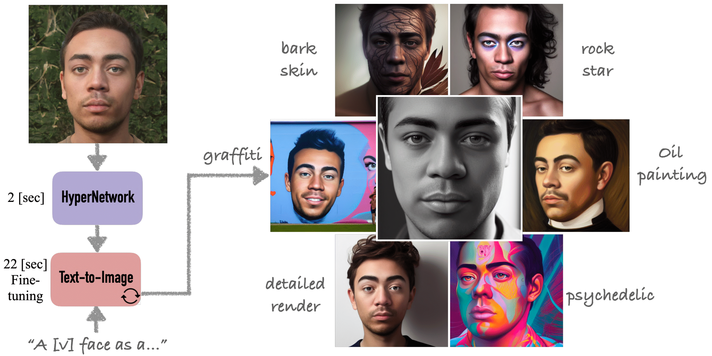
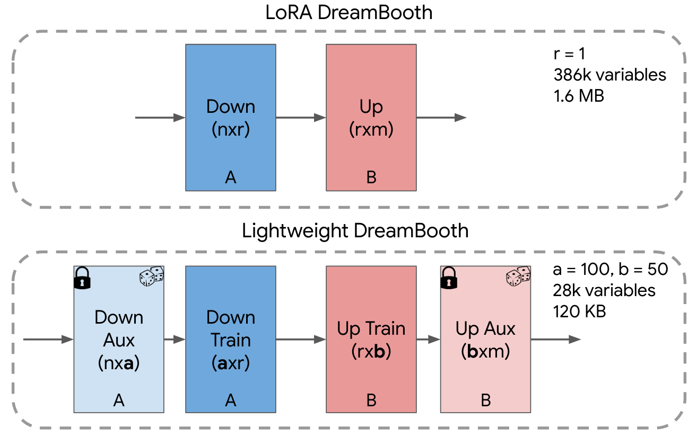
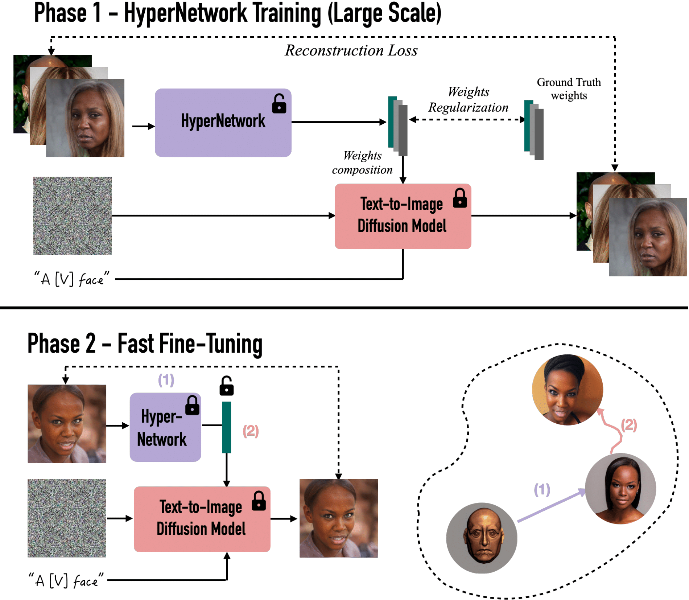
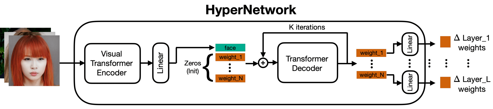
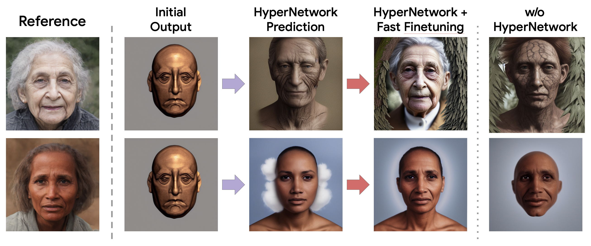
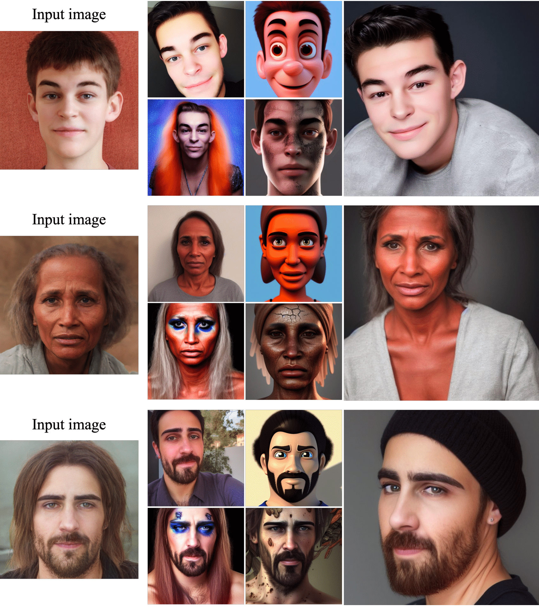
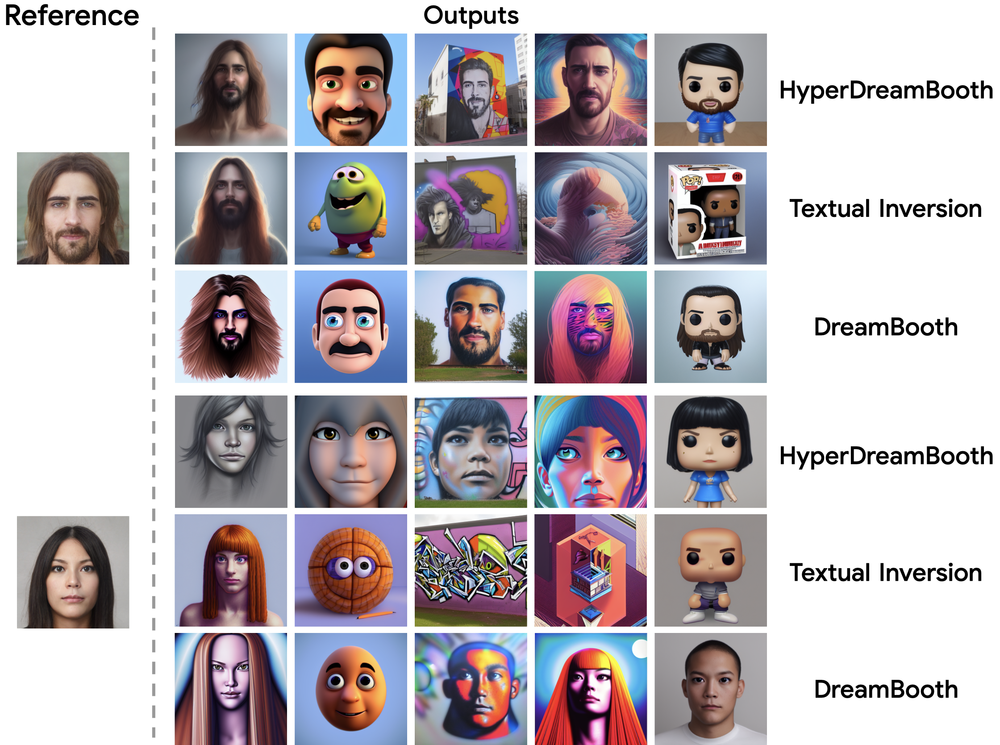

HyperDreamBooth: HyperNetworks for Fast
Personalization of Text-to-Image Models
Nataniel Ruiz Yuanzhen Li Varun Jampani Wei Wei Tingbo Hou
Yael Pritch Neal Wadhwa Michael Rubinstein Kfir Aberman
Google Research

HyperDreamBooth: smaller, faster, better.
Using only a single input image, HyperDreamBooth is able to personalize a text-to-image diffusion model 25x faster than DreamBooth, by using (1) a HyperNetwork to generate an initial prediction of a subset of network weights that are then (2) refined using fast finetuning for high fidelity to subject detail. Our method both conserves model integrity and style diversity while closely approximating the subject's essence and details.
[Paper]
Abstract
Personalization has emerged as a prominent aspect within the field of generative AI, enabling the synthesis of individuals in diverse contexts and styles, while retaining high-fidelity to their identities. However, the process of personalization presents inherent challenges in terms of time and memory requirements. Fine-tuning each personalized model needs considerable GPU time investment, and storing a personalized model per subject can be demanding in terms of storage capacity.
To overcome these challenges, we propose HyperDreamBooth - a hypernetwork capable of efficiently generating a small set of personalized weights from a single image of a person. By composing these weights into the diffusion model, coupled with fast finetuning, HyperDreamBooth can generate a person's face in various contexts and styles, with high subject details while also preserving the model's crucial knowledge of diverse styles and semantic modifications.
Our method achieves personalization on faces in roughly 20 seconds, 25x faster than DreamBooth and 125x faster than Textual Inversion, using as few as one reference image, with the same quality and style diversity as DreamBooth. Also our method yields a model that is 10000x smaller than a normal DreamBooth model.
Contributions
Our work proposes to tackle the problems of size and speed of DreamBooth, while preserving model integrity, editability and subject fidelity. We propose the following contributions:
- Lighweight DreamBooth (LiDB) - a personalized text-to-image model, where the customized part is roughly 100KB of size. This is achieved by training a DreamBooth model in a low-dimensional weight-space generated by a random orthogonal incomplete basis inside of a low-rank adaptation weight space.
- HyperNetwork architecture that leverages the Lightweight DreamBooth configuration and generates the customized part of the weights for a given subject in a text-to-image diffusion model. These provide a strong directional initialization that allows us to further finetune the model in order to achieve strong subject fidelity within a few iteration. Our method is 25x faster than DreamBooth while achieving similar performances.
- We propose the technique of rank-relaxed finetuning, where the rank of a LoRA DreamBooth model is relaxed during optimization in order to achieve higher subject fidelity, allowing us to initialize the personalized model with an initial approximation using our HyperNetwork, and then approximate the high-level subject details using rank-relaxed finetuning.
HyperNetwork
Our approach consists of 3 core elements: Lightweight DreamBooth (LiDB), a HyperNetwork that predicts LiDB weight, and rank-relaxed fast fine-tuning.
The core idea behind Lightweight DreamBooth (LiDB) is to further decompose the weight-space of a rank-1 LoRa residuals. Specifically, we do this using a random orthogonal incomplete basis within the rank-1 LoRA weight-space. We illustrate the idea in the figure below. The approach can also be understood as further decomposing the Down (A) and Up (B) matrices of LoRA into two matrices each, where the "Aux" layers are randomly initialized with row-wise orthogonal vectors and are frozen. Surprisingly, we find that with a=100 and b=50, we obtain models that have only 30K trainable variables and are 120 KB in size, with personalization results that are strong and maintain subject fidelity, editability and style diversity.

HyperDreamBooth Training and Fast Fine-Tuning. Phase-1: Training a hypernetwork to predict network weights from a face image, such that a text-to-image diffusion network outputs the person's face from the sentence "a [v] face" if the predicted weights are applied to it. We use pre-computed personalized weights for supervision, using an L2 loss, as well as the vanilla diffusion reconstruction loss. Phase-2: Given a face image, our hypernetwork predicts an initial guess for the network weights, which are then fine-tuned using the reconstruction loss to enhance fidelity.

HyperNetwork Architecture: Our hypernetwork consists of a Visual Transformer (ViT) encoder that translates face images into latent face features that are then concatenated to latent layer weight features that are initiated by zeros. A Transformer Decoder receives the sequence of the concatenated features and predicts the values of the weight features in an iterative manner by refining the initial weights with delta predictions. The final layer weight deltas that will be added to the diffusion network are obtained by passing the decoder outputs through learnable linear layers. The transformer decoder is a strong fit for this type of weight prediction task, since the output of a diffusion UNet or Text Encoder is sequentially dependent on the weights of the layers, thus in order to personalize a model there is interdependence of the weights from different layers. In previous work, this dependency is not rigorously modeled in the HyperNetwork, whereas with a transformer decoder with a positional embedding, this positional dependency is modeled - similar to dependencies between words in a language model transformer.

HyperNetwork + Fast Finetuning achieves strong results. Below we show, for each reference (row), outputs from the initial hypernetwork prediction (HyperNetwork Prediction column), as well as results after HyperNetwork prediction and fast finetuning (HyperNetwork + Fast Finetuning). We also show generated results without the HyperNetwork prediction component, demonstrating its importance.

Results
Results Gallery: Our method can generate novel artistic and stylized results of diverse subjects (depicted in an input image, left) with considerable editability while maintaining the integrity to the subject's key facial characteristics. The output images were generated with the following captions (top-left to bottom-right): "An Instagram selfie of a [V] face", "A Pixar character of a [V] face", "A [V] face with bark skin", A [V] face as a rock star}. Rightmost: A professional shot of a [V] face".

Comparisons
We compare random generated samples for our method (HyperDreamBooth), DreamBooth and Textual Inversion for two different identities and five different stylistic prompts. We observe that our method generally achieves very strong editability while preserving identity, generally surpassing competing methods in the single-reference regime. For quantitative comparisons, including a user study please refer to the paper.

Societal Impact
This work aims to empower users with a tool for augmenting their creativity and ability to express themselves through creations in an intuitive manner. However, advanced methods for image generation can affect society in complex ways. Our proposed method inherits many possible concerns that affect this class of image generation, including altering sensitive personal characteristics such as skin color, age and gender, as well as reproducing unfair bias that can already be found in pre-trained model's training data. The underlying open source pre-trained model used in our work, Stable Diffusion, exhibits some of these concerns. All concerns related to our work have been present in the litany of recent personalization work, and the only augmented risk is that our method is more efficient and faster than previous work. In particular, we haven't found in our experiments any difference with respect to previous work on bias, or harmful content, and we have qualitatively found that our method works equally well across different ethnicities, ages, and other important personal characteristics. Nevertheless, future research in generative modeling and model personalization must continue investigating and revalidating these concerns.
Acknowledgements:
We thank Kihyuk Sohn, Kathy Meier-Hellstern and Luming Tang for their insightful feedback that helped improve this work. We also thank Moab Arar, Rinon Gal and Daniel Cohen-Or for interesting conversations and support. And finally, a particular and special thank you to Jason Baldridge for his feedback and support for this project.